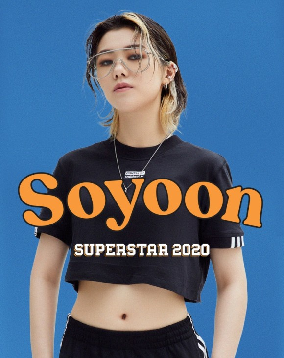

- 황소윤
- 새소년
- 매직스트로베리사운드
황소윤
음악가로서 So!YoON! (황소윤)의 본격적인 시작은 2016년 밴드 ‘새소년’의 결성이다. 밴드를 한 단어로 표현해달라는 질문에 ‘코딱지’라고 대답할 만큼 빛나는 미래 같은 것은 꿈도 꾸지 않았던 18세의 그녀. 하지만 그녀가 가진 뛰어난 작곡 센스와 무대 위에서의 에너지, 그리고 매력적인 목소리는 이내 새소년을 특별한 존재로 만들었다.

그래서 2017년 첫 EP 여름깃을 발매할 즈음에는 인디 음악을 좋아하는 이들 중에는 그 이름을 모르는 사람이 없게 되었다. 이후 본인들의 모든 기획 공연을 예매 오픈 1분 이내에 매진시키며 놀랍게 성장한 그들은 한국대중음악상에서 ‘올해의 신인’과 ‘최우수 록 노래’ 2개 부문을 수상하며 데뷔 첫 해에 최고의 마침표를 찍는다.